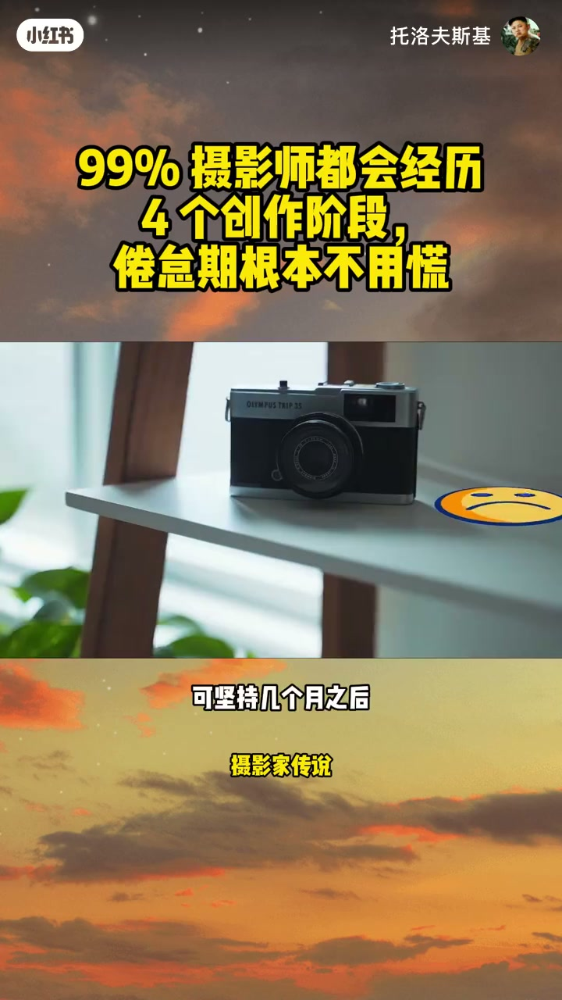
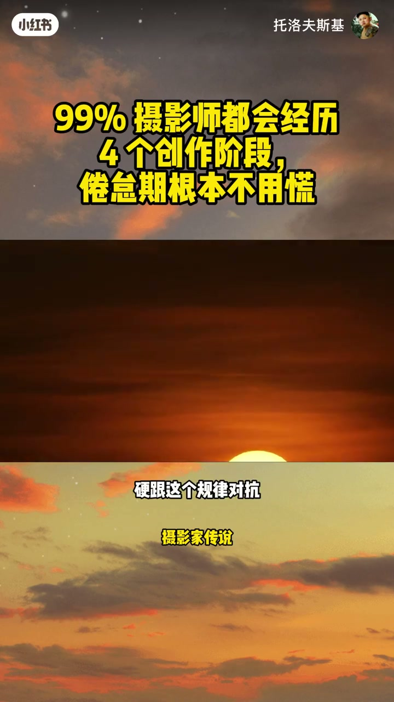
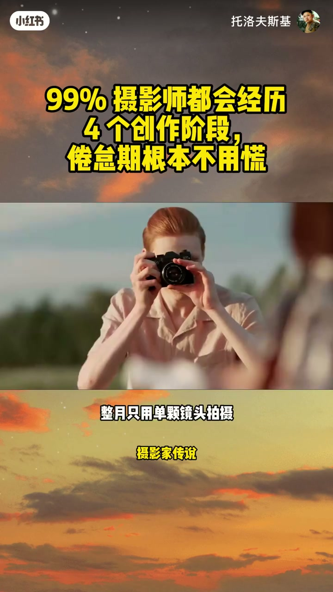
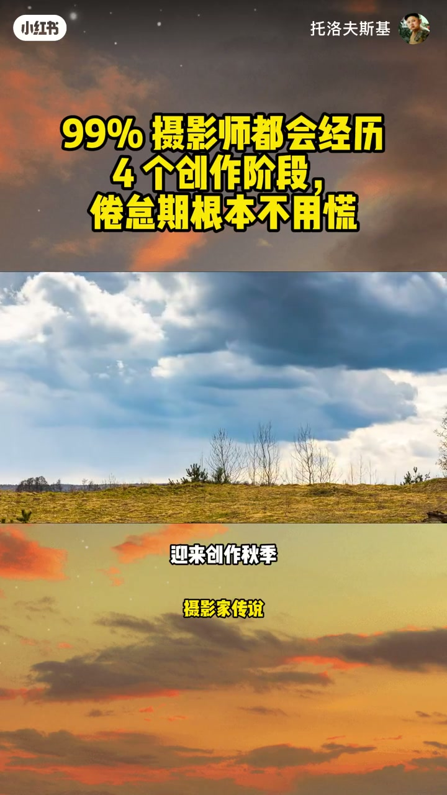
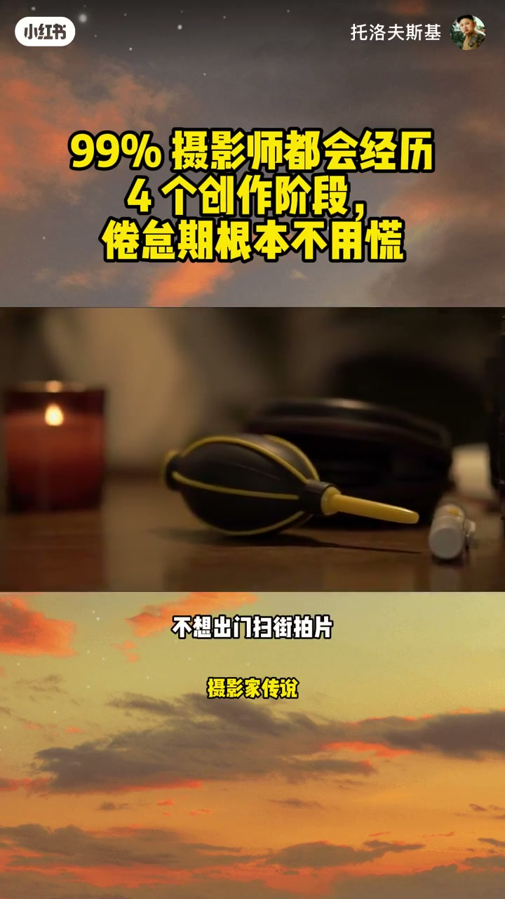
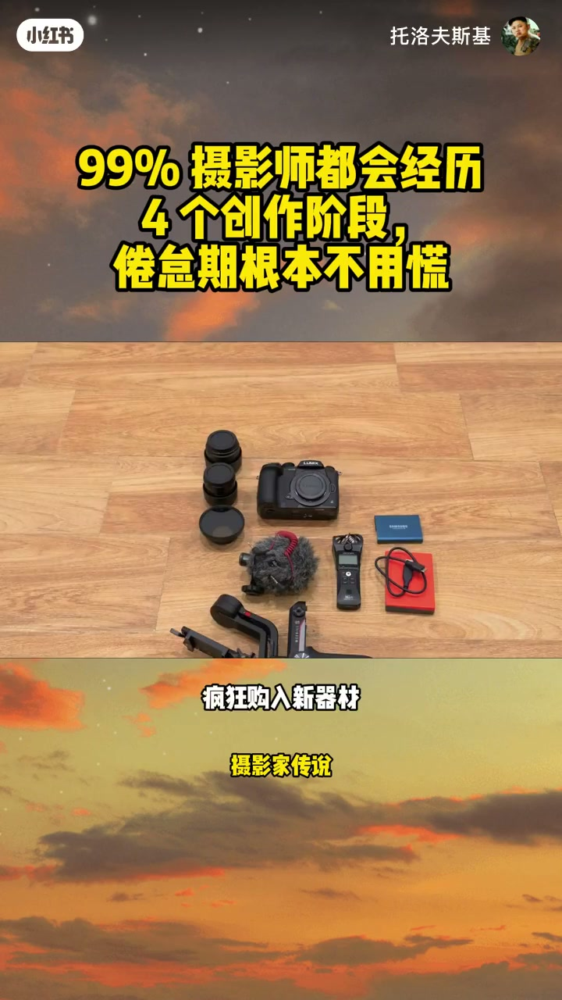
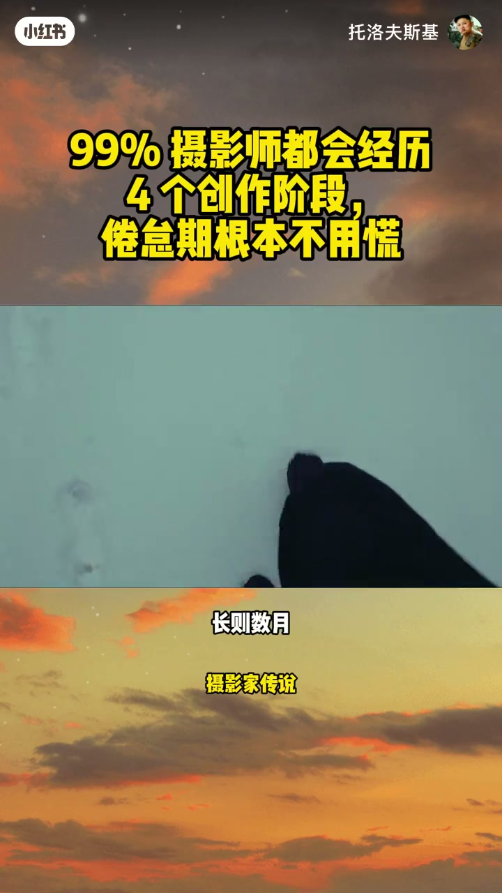
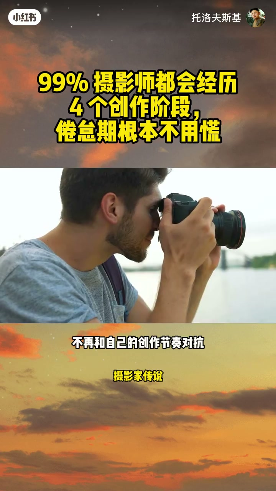

内容要点
「99% 摄影师都会经历 4 个创作阶段」教程要点：你有没有一段时间连碰相机都提不起兴趣 → 别怀疑自己不爱摄影 → 这真的太正常了 → 今天聊一卷几乎所有摄影师都经历过；详见正文。
知识结构
你有没有一段时间连碰相机都提不起兴趣
新鲜感退去后
冬季就是专属恢复期
- 你有没有一段时间连碰相机都提不起兴趣
- 别怀疑自己不爱摄影
- 这真的太正常了
- 今天聊一卷几乎所有摄影师都经历过
- 却很少有人主动说的事
你有没有一段时间连碰相机都提不起兴趣
00:00–02:16你有没有一段时间连碰相机都提不起兴趣
你有没有一段时间连碰相机都提不起兴趣；别怀疑自己不爱摄影；这真的太正常了；今天聊一卷几乎所有摄影师都经历过；却很少有人主动说的事；你一定有过这种状态；满脑子全是摄影；天天刷天气软件规划拍摄路线；蹲各种摄影教学视频；相机走到哪背到哪；总觉得下一张风神大片；就在下一个转角等着自己；可坚持几个月之后；状态直接反转；相机往架子上一扔；落灰好几周都不想碰；完全没有创作灵感；就算撞见绝美光线也毫无拍摄欲望；甚至会冒出可怕的念头；我是不是彻底失去对摄影的热情了；实话跟大家说；所有摄影人都会卡在这个阶段；很多人默认创作是一条持续向上的直线；只要喜欢摄影就该永远有拍摄动力；持续出片；次次拍出惊艳作品；但创作根本不是这个逻辑；就像大自然有四季轮回；我们的创作状态也分四个周期；快速成长；稳定产出；沉淀反思；放空休息；问题就出在我们总逼自己保持高强度持续拍摄；这恰恰是产生倦怠的根源；创作本身就是循环起伏的；不存在一路走高的直线；硬跟这个规律对抗；只会把自己耗得身心俱疲；更拍不出好作品；今天详细拆解摄影四大创作阶段；看完你就彻底明白；自己为什么会陷入拍摄倦怠；第一个阶段；创作春季；也是所有人最爱的阶段；满是新鲜感与探索欲；看什么画面都觉得值得拍；可能是刚入手第一台相机；刚学会全新修图思路；或是刚入腾街拍；星空野生动物这类新题材；瞬间彻底上头；脑子里新想法多到根本拍不完；为了拍照天不亮就出门；拍到日落天黑都舍不得收设备；各类题材全都想尝试；这个阶段进步速度最快；但也藏着隐患；只顾着追逐新鲜题材；沉不下新沉淀打磨技术；春季不光要多拍；更要大胆是错；允许自己拍出废片；试试长曝光 黑白摄影；整个月只用单颗镜头拍摄；主动跳出舒适区；但春季的新鲜感不会永久持续


02:15–04:29新鲜感退去后
新鲜感退去后；就进入创作下季；到这个阶段；调相机参数已经不用反复琢磨；形成专属修图色调；清除自己偏爱拍摄的题材；这是高效稳定的产出期；不用到处找新奇拍摄内容；专心深更创作就行；踏实积累作品集；收尾之前搁置的拍摄项目；稳定产出成片；很多人最拿得出手的代表作；都诞生在下季；此时你会拥有稳定自信；拿起相机就能下意识找准拍摄思路；有意思的是；不少摄影师在这个阶段会产生负罪感；觉得自己不折腾新风格；不换题材；就是原地踏步没有进步；但成长不一定靠频繁更换拍摄方向；有时候你只需要沉下心；深更当下的创作；夏季过后迎来创作秋季；这是最容易被摄影师低估的阶段；秋季主打深度反思；你不再纠结接下来要拍什么；反而开始复盘；我之前到底拍了什么；翻过往的全部照片；重启半途搁置的拍摄项目；能清晰察觉到；自己作品里统一的风格脉络；对摄影建立更深的自我认知；《零散》的单张照片；慢慢整合为完整系列作品；拍摄目的性会变强；不再盲目乱拍；只聚焦自己真正在意的主题；很多人把这段冷静期；错当成没动力；其实只是你的创作节奏放缓；在消化所有过往拍摄积累；秋季是把《零散》成长；固化成专属个人摄影风格的关键时期；深度反思过后；就到了几乎所有摄影师害怕的创作冬季；也是最容易让人焦虑的阶段；不想出门扫街拍片；新款相机镜头完全勾不起兴趣；打开LR修图软件；盯着原图看几分钟；又默默关掉；完全没有创作动力；这时大家很容易慌神；我以后是不是再也不想拍照了；我彻底不爱摄影了吗；要不要把全套器材转手卖掉；千万别焦虑；冬季不代表你放弃摄影；只是身心过度疲惫需要修整；创作和人的身体一样；必须定期休息恢复；长期强迫自己不停产出；只会陷入重度拍摄倦怠；适度空窗休息；对长期创作状态保持创作热情至关重要


04:30–06:57冬季就是专属恢复期
冬季就是专属恢复期；你的大脑终于能卸下拍摄压力喘口气；大自然不可能四季化开；树木也不会全年持续抽新芽；万事万物都有修整周期；摄影创作同理；冬季最忌讳硬逼自己；强行出门拍摄；疯狂购入新器材找回灵感；刷海量教学视频试图摆脱倦怠；有时候你只需要彻底放空休息；休息带来的改变远超你的想象；可以培养其他爱好；多陪伴家人；外出旅行干脆不带相机；就算随身带设备；也不强制自己必须出片；单纯闲逛观景；想拍就随手按两张；不想拍就彻底放下；你的目标不是强行找回春季的亢奋状态；而是好好修整；等新一轮创作春季到来时；有充足精力接触迸发的灵感；创作热情永远会循环回归；这也是摄影最迷人的地方；补充一点；四大创作阶段没有固定不可逆的顺序；有时候会直接从夏季跳到冬季；有时候一个全新拍摄项目；能瞬间把你拉回充满新鲜感的春季；冬季修整周期长短也因人而异；短则一周 长则数月；全都属于正常情况；创作不是标准化机器；更像一套多变的生态体系；充满不确定性 持续动态变化；很多资深创作者都清楚；灵感本就是起起伏伏；硬逼自己全年高产；反而会偏离自己热爱摄影的初心；如果你现在正身陷拍摄倦怠；大概率不是你不爱摄影；只是切换到了其他创作阶段；有可能本该安心修整的冬季；你却逼着自己像高产夏季一样不停拍片；也有可能当下需要沉淀反思的秋季；你却硬要不断尝试全新题材；说不定属于你的新一轮创作春季；马上就要到来；只是你暂时没有察觉；不用强迫自己死守某一个创作阶段；认清当下自身状态 坦然接纳就好；不再和自己的创作节奏对抗；顺着周期调整拍摄状态；摄影才能回归纯粹的快乐；大家可以在评论区聊聊；你现在处于哪个创作阶段；是满脑子新想法的春季；稳定高产的夏季；沉淀复盘的秋季；还是放空休整的冬季；记住每个阶段都不会永久停留；相机一直都在；好看的光线从不缺席；你的创作热情早晚都会回来；咱们下期再见




口述/画面要点（40段）
结合 Whisper medium 与画面大字整理；专有名词已校对。
你有没有一段时间连碰相机都提不起兴趣
别怀疑自己不爱摄影
这真的太正常了
今天聊一卷几乎所有摄影师都经历过
却很少有人主动说的事
你一定有过这种状态
满脑子全是摄影
天天刷天气软件规划拍摄路线
蹲各种摄影教学视频
相机走到哪背到哪
总觉得下一张风神大片
就在下一个转角等着自己
可坚持几个月之后
状态直接反转
相机往架子上一扔
落灰好几周都不想碰
完全没有创作灵感
就算撞见绝美光线也毫无拍摄欲望
甚至会冒出可怕的念头
我是不是彻底失去对摄影的热情了
实话跟大家说
所有摄影人都会卡在这个阶段
很多人默认创作是一条持续向上的直线
只要喜欢摄影就该永远有拍摄动力
持续出片
次次拍出惊艳作品
但创作根本不是这个逻辑
就像大自然有四季轮回
我们的创作状态也分四个周期
快速成长
稳定产出
沉淀反思
放空休息
问题就出在我们总逼自己保持高强度持续拍摄
这恰恰是产生倦怠的根源
创作本身就是循环起伏的
不存在一路走高的直线
硬跟这个规律对抗
只会把自己耗得身心俱疲
更拍不出好作品